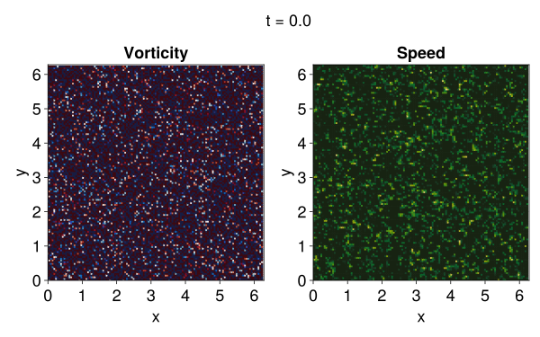

Two dimensional turbulence example
In this example, we initialize a random velocity field and observe its turbulent decay in a two-dimensional domain. This example demonstrates:
- How to run a model with no tracers and no buoyancy model.
- How to use computed
Fields to generate output.
Install dependencies
First let's make sure we have all required packages installed.
using Pkg
pkg"add Oceananigans, CairoMakie"Model setup
We instantiate the model with an isotropic diffusivity. We use a grid with 128² points, a fifth-order advection scheme, third-order Runge-Kutta time-stepping, and a small isotropic viscosity. Note that we assign Flat to the z direction.
using Oceananigans
grid = RectilinearGrid(size=(128, 128), extent=(2π, 2π), topology=(Periodic, Periodic, Flat))
model = NonhydrostaticModel(; grid,
timestepper = :RungeKutta3,
advection = UpwindBiasedFifthOrder(),
closure = ScalarDiffusivity(ν=1e-5))NonhydrostaticModel{CPU, RectilinearGrid}(time = 0 seconds, iteration = 0)
├── grid: 128×128×1 RectilinearGrid{Float64, Periodic, Periodic, Flat} on CPU with 3×3×0 halo
├── timestepper: RungeKutta3TimeStepper
├── advection scheme: Upwind Biased reconstruction order 5
├── tracers: ()
├── closure: ScalarDiffusivity{ExplicitTimeDiscretization}(ν=1.0e-5)
├── buoyancy: Nothing
└── coriolis: NothingRandom initial conditions
Our initial condition randomizes model.velocities.u and model.velocities.v. We ensure that both have zero mean for aesthetic reasons.
using Statistics
u, v, w = model.velocities
uᵢ = rand(size(u)...)
vᵢ = rand(size(v)...)
uᵢ .-= mean(uᵢ)
vᵢ .-= mean(vᵢ)
set!(model, u=uᵢ, v=vᵢ)Setting up a simulation
We set-up a simulation that stops at 50 time units, with an initial time-step of 0.1, and with adaptive time-stepping and progress printing.
simulation = Simulation(model, Δt=0.2, stop_time=50)Simulation of NonhydrostaticModel{CPU, RectilinearGrid}(time = 0 seconds, iteration = 0)
├── Next time step: 200 ms
├── Elapsed wall time: 0 seconds
├── Wall time per iteration: NaN days
├── Stop time: 50 seconds
├── Stop iteration : Inf
├── Wall time limit: Inf
├── Callbacks: OrderedDict with 4 entries:
│ ├── stop_time_exceeded => Callback of stop_time_exceeded on IterationInterval(1)
│ ├── stop_iteration_exceeded => Callback of stop_iteration_exceeded on IterationInterval(1)
│ ├── wall_time_limit_exceeded => Callback of wall_time_limit_exceeded on IterationInterval(1)
│ └── nan_checker => Callback of NaNChecker for u on IterationInterval(100)
├── Output writers: OrderedDict with no entries
└── Diagnostics: OrderedDict with no entriesThe TimeStepWizard helps ensure stable time-stepping with a Courant-Freidrichs-Lewy (CFL) number of 0.7.
wizard = TimeStepWizard(cfl=0.7, max_change=1.1, max_Δt=0.5)
simulation.callbacks[:wizard] = Callback(wizard, IterationInterval(10))Callback of TimeStepWizard(cfl=0.7, max_Δt=0.5, min_Δt=0.0) on IterationInterval(10)Logging simulation progress
We set up a callback that logs the simulation iteration and time every 100 iterations.
using Printf
function progress_message(sim)
max_abs_u = maximum(abs, sim.model.velocities.u)
walltime = prettytime(sim.run_wall_time)
return @info @sprintf("Iteration: %04d, time: %1.3f, Δt: %.2e, max(|u|) = %.1e, wall time: %s\n",
iteration(sim), time(sim), sim.Δt, max_abs_u, walltime)
end
add_callback!(simulation, progress_message, IterationInterval(100))Output
We set up an output writer for the simulation that saves vorticity and speed every 20 iterations.
Computing vorticity and speed
To make our equations prettier, we unpack u, v, and w from the NamedTuple model.velocities:
u, v, w = model.velocitiesNamedTuple with 3 Fields on 128×128×1 RectilinearGrid{Float64, Periodic, Periodic, Flat} on CPU with 3×3×0 halo:
├── u: 128×128×1 Field{Face, Center, Center} on RectilinearGrid on CPU
├── v: 128×128×1 Field{Center, Face, Center} on RectilinearGrid on CPU
└── w: 128×128×1 Field{Center, Center, Face} on RectilinearGrid on CPUNext we create two Fields that calculate (i) vorticity that measures the rate at which the fluid rotates and is defined as
\[ω = ∂_x v - ∂_y u \, ,\]
ω = ∂x(v) - ∂y(u)BinaryOperation at (Face, Face, Center)
├── grid: 128×128×1 RectilinearGrid{Float64, Periodic, Periodic, Flat} on CPU with 3×3×0 halo
└── tree:
- at (Face, Face, Center)
├── ∂xᶠᶠᶜ at (Face, Face, Center) via identity
│ └── 128×128×1 Field{Center, Face, Center} on RectilinearGrid on CPU
└── ∂yᶠᶠᶜ at (Face, Face, Center) via identity
└── 128×128×1 Field{Face, Center, Center} on RectilinearGrid on CPUWe also calculate (ii) the speed of the flow,
\[s = \sqrt{u^2 + v^2} \, .\]
s = sqrt(u^2 + v^2)UnaryOperation at (Face, Center, Center)
├── grid: 128×128×1 RectilinearGrid{Float64, Periodic, Periodic, Flat} on CPU with 3×3×0 halo
└── tree:
sqrt at (Face, Center, Center) via identity
└── + at (Face, Center, Center)
├── ^ at (Face, Center, Center)
│ ├── 128×128×1 Field{Face, Center, Center} on RectilinearGrid on CPU
│ └── 2
└── ^ at (Center, Face, Center)
├── 128×128×1 Field{Center, Face, Center} on RectilinearGrid on CPU
└── 2We pass these operations to an output writer below to calculate and output them during the simulation.
filename = "two_dimensional_turbulence"
simulation.output_writers[:fields] = JLD2OutputWriter(model, (; ω, s),
schedule = TimeInterval(0.6),
filename = filename * ".jld2",
overwrite_existing = true)JLD2OutputWriter scheduled on TimeInterval(600 ms):
├── filepath: ./two_dimensional_turbulence.jld2
├── 2 outputs: (ω, s)
├── array type: Array{Float64}
├── including: [:grid, :coriolis, :buoyancy, :closure]
├── file_splitting: NoFileSplitting
└── file size: 27.1 KiBRunning the simulation
Pretty much just
run!(simulation)[ Info: Initializing simulation...
[ Info: Iteration: 0000, time: 0.000, Δt: 1.00e-01, max(|u|) = 7.6e-01, wall time: 0 seconds
[ Info: ... simulation initialization complete (7.582 seconds)
[ Info: Executing initial time step...
[ Info: ... initial time step complete (10.020 seconds).
[ Info: Iteration: 0100, time: 6.444, Δt: 6.40e-02, max(|u|) = 3.1e-01, wall time: 21.449 seconds
[ Info: Iteration: 0200, time: 13.611, Δt: 8.08e-02, max(|u|) = 3.0e-01, wall time: 25.629 seconds
[ Info: Iteration: 0300, time: 20.983, Δt: 7.44e-02, max(|u|) = 3.2e-01, wall time: 29.413 seconds
[ Info: Iteration: 0400, time: 27.876, Δt: 7.16e-02, max(|u|) = 2.8e-01, wall time: 34.050 seconds
[ Info: Iteration: 0500, time: 35.201, Δt: 7.94e-02, max(|u|) = 2.9e-01, wall time: 38.244 seconds
[ Info: Iteration: 0600, time: 42.230, Δt: 7.53e-02, max(|u|) = 2.7e-01, wall time: 42.318 seconds
[ Info: Simulation is stopping after running for 47.051 seconds.
[ Info: Simulation time 50 seconds equals or exceeds stop time 50 seconds.
Visualizing the results
We load the output.
ω_timeseries = FieldTimeSeries(filename * ".jld2", "ω")
s_timeseries = FieldTimeSeries(filename * ".jld2", "s")
times = ω_timeseries.times85-element Vector{Float64}:
0.0
0.6
1.2
1.7999999999999998
2.4
3.0
3.6
4.2
4.8
5.3999999999999995
5.999999999999999
6.599999999999999
7.199999999999998
7.799999999999999
7.873991326266233
8.4
9.0
9.6
10.2
10.799999999999999
11.399999999999999
11.999999999999998
12.599999999999998
13.199999999999998
13.799999999999997
14.399999999999997
14.999999999999996
15.599999999999996
16.199999999999996
16.799999999999997
17.4
18.0
18.6
19.200000000000003
19.800000000000004
20.400000000000006
21.000000000000007
21.60000000000001
22.20000000000001
22.80000000000001
23.400000000000013
24.000000000000014
24.60000000000002
25.2
25.8
26.400000000000002
27.000000000000004
27.600000000000005
28.200000000000006
28.800000000000008
29.400000000000013
30.0
30.6
31.200000000000003
31.800000000000004
32.400000000000006
33.00000000000001
33.60000000000001
34.20000000000002
34.800000000000004
35.4
36.0
36.6
37.2
37.800000000000004
38.400000000000006
39.000000000000014
39.6
40.2
40.800000000000004
41.400000000000006
42.00000000000001
42.60000000000001
43.20000000000001
43.80000000000001
44.40000000000002
45.0
45.60000000000001
46.2
46.800000000000004
47.40000000000001
48.0
48.6
49.2
49.800000000000004Construct the $x, y, z$ grid for plotting purposes,
xω, yω, zω = nodes(ω_timeseries)
xs, ys, zs = nodes(s_timeseries)and animate the vorticity and fluid speed.
using CairoMakie
set_theme!(Theme(fontsize = 24))
fig = Figure(size = (800, 500))
axis_kwargs = (xlabel = "x",
ylabel = "y",
limits = ((0, 2π), (0, 2π)),
aspect = AxisAspect(1))
ax_ω = Axis(fig[2, 1]; title = "Vorticity", axis_kwargs...)
ax_s = Axis(fig[2, 2]; title = "Speed", axis_kwargs...)We use Makie's Observable to animate the data. To dive into how Observables work we refer to Makie.jl's Documentation.
n = Observable(1)Observable(1)
Now let's plot the vorticity and speed.
ω = @lift interior(ω_timeseries[$n], :, :, 1)
s = @lift interior(s_timeseries[$n], :, :, 1)
heatmap!(ax_ω, xω, yω, ω; colormap = :balance, colorrange = (-2, 2))
heatmap!(ax_s, xs, ys, s; colormap = :speed, colorrange = (0, 0.2))
title = @lift "t = " * string(round(times[$n], digits=2))
Label(fig[1, 1:2], title, fontsize=24, tellwidth=false)
fig
Finally, we record a movie.
frames = 1:length(times)
@info "Making a neat animation of vorticity and speed..."
record(fig, filename * ".mp4", frames, framerate=24) do i
n[] = i
end[ Info: Making a neat animation of vorticity and speed...
This page was generated using Literate.jl.